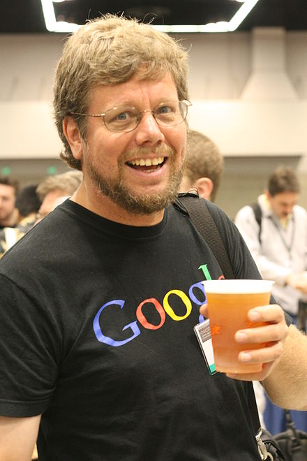

Історія
Розробка мови Python була розпочата в кінці 1980-х років співробітником голландського інституту CWI Гвідо ван Россумом.

Для розподіленої ОС Amoeba потрібна була розширювана скриптова мова, і Гвідо почав писати Python на дозвіллі, запозичивши деякі напрацювання для мови ABC (Гвідо брав участь у розробці цієї мови, орієнтованої на навчання програмування). У лютому 1991 року Гвідо опублікував вихідний текст в групі новин alt.sources. Мова почала вільно поширюватися через Інтернет і сподобалася іншим програмістам. З 1991 року Python є цілком об'єктно-орієнтованим. Python також запозичив багато рис таких мов, як C, C++, Modula-3 і Icon, й окремі риси функціонального програмування з Ліспу.